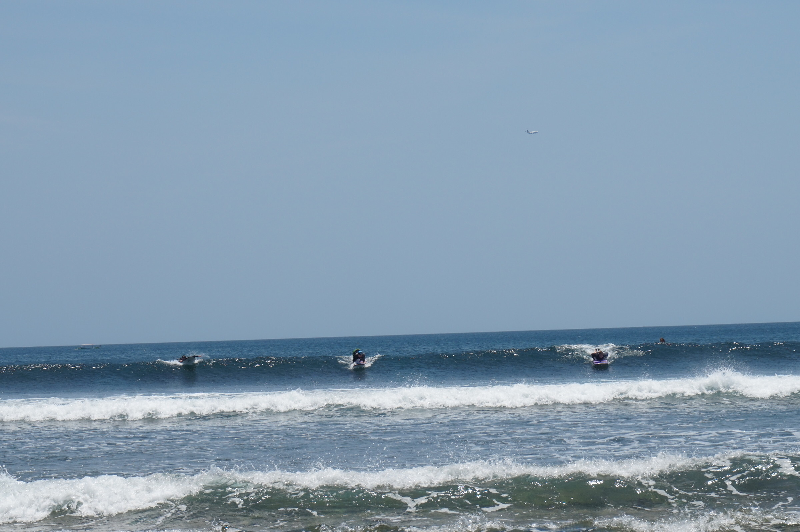

Бали — одно из самых популярных мест Индонезии, куда в течение всего года прилетают туристы со всего света. Несмотря на то, что он не самый крупный остров Малайского архипелага, Бали сумел за несколько десятков лет превратиться в мировой центр туризма.
Сюда прилетают за высокими волнами для занятия серфингом, за практиками йоги, за шикарной
природой и лучшими
видами на закат, за вечеринками на пляжах и за уникальной культурой, которую трепетно хранят местные жители.
Каждый
находит на острове что-то свое.
Бали называют «островом тысячи храмов», поэтому любители древностей здесь тоже не будут скучать. Помимо
многочисленных
храмов, остров изобилует еще множеством природных и культурных
достопримечательностей:
дворцами,
музеями,
парками и
зоопарками.
Узнать больше о флоре и фауне Бали можно в национальном парке Барат или погрузившись на дно моря со снаряжением
одного из дайвинг-центров острова.
Бали расположен практически на экваторе, поэтому пользуется всеми благами тропических островов. Здесь всегда
можно попробовать самые спелые фрукты и увидеть на прилавке настоящую экзотику.
На острове произрастают редкие лекарственные растения, которые используют в натуральной косметике. Ощутить их
целебное
действие получится в любом
СПА.
А массаж за символическую плату может позволить себе турист практически с любым бюджетом.
Каждый день балийские рыбаки возвращаются с тоннами улова, а потом продают его на местных рынках. Уехать с
острова и не
отведать деликатесов из морских гадов считается преступлением.
Ко всему прочему на Бали прекрасно развита отельная инфраструктура. Здесь можно остановится как в самом дорогом
пятизвездочном отеле, так и в дешевом хостеле. Также многие туристы любят арендовать целые виллы у моря или с
видом на
рисовые террасы.
История
В древних летописях и других источниках крайне мало упоминается об истории Бали. Однако существуют свидетельства
того,
что уже в 2500 году до нашей эры первые переселенцы китайского и малайского происхождения добрались сюда по морю
через
территорию
Тайваня и
Филиппин.
История острова полна трагических событий. Кто только его не завоевывал. Тем не менее люди, населяющие Бали
сейчас,
остались улыбчивыми и доброжелательными. Они по-прежнему трепетно относятся к религии и национальным традициям.
Золотой век
Вплоть до XII века остров оставался независимым, пока его не завоевал король Кертанегара с острова Ява. Его
правление
оказалось недолгим.
После его смерти в 1292 году к власти пришел его сын Виджая, во времена владычества которого и начался «золотой
век»
Бали.
Данный период знаменуется резким скачком духовного развития. Многие
храмы острова построены именно в это время.
Но все кардинально меняется после прихода европейцев, которых интересовала лишь торговая и финансовая выгода, а
не
культурный опыт.
Голландская колония
В конце XIX века Голландия принимает решение основать на Бали Ост-Индийскую компанию. Несмотря на упорное сопротивление балийцев, европейцы проводят достаточно жесткую колониальную политику и подчиняют себе одну область за другой. Непреклонным остается лишь юг острова.
Тогда в 1906 году голландцы высадились в Сануре для штурма дворца королевства Бадунг. Однако сопротивления они там не встретили. Навстречу им шла огромная толпа в белых одеждах во главе со священником. Не дойдя ста метров до вооруженных солдат, священник воткнул себе в грудь кинжал. За ним последовали все остальные участники процессии, в том числе дети и женщины. Гордые балийцы не хотели погибнуть в неравном бою, поэтому совершили массовое самоубийство.
Борьба за независимость
Мировая общественность и даже сама Голландия осудила поведение своей армии. Авторитет был утрачен. Период голландского господства завершился в 1942 году, когда Япония оккупировала остров во время Второй мировой войны. Японская оккупация продолжалась вплоть до капитуляции в 1945 году. Все это время балийцы вели партизанскую войну и боролись с репрессиями.
В 1949 году Бали обрел долгожданную независимость.
Новое правительство стало привлекать крупных иностранных инвесторов, которые строили здесь всю туристическую инфраструктуру. Теперь мы знаем Бали как одно из лучших мест на планете для отдыха.
Климат и погода на Бали
Бали находится немного южнее экватора, поэтому климат здесь экваториально-муссонный. А это значит, что в течение всего года на острове жарко и влажно. Привычных нам смен четырех сезонов тут нет. Вместо этого здесь всего два сезона: влажный и сухой.
Поэтому в зависимости от климатических условий стоит выбирать время для отпуска на Бали. Влажный сезон больше подходит для размеренного отдыха без толп туристов и серфинга на высоких волнах. Сухой сезон — для любителей позагорать на пляжах и путешествий на байках в горные районы острова.
Влажный сезон на Бали длится с октября по апрель, а максимальное количество осадков выпадает во второй половине января и в феврале.
В эти месяцы температура днем поднимается выше +30˚С и не опускается ниже
+25˚С ночью. При этом держится очень
высокая
влажность около 80%. Но даже если на улице пасмурно, не следует забывать про солнцезащитный крем, чтобы не
обгореть.
Планируя свою поездку в это время, стоит учесть некоторые особенности туризма. Например, погода в новогодние
каникулы
вполне умеренная. Поэтому большое количество людей отправляются на остров отмечать Новый год.
Зато после праздников поток туристов значительно уменьшается из-за тропических ливней, что влечет за собой
снижение цен
на проживание в отелях и авиаперелеты. Жизнь на Бали становится более размеренной. В большей степени влажный
сезон
выбирают любители серфинга, так как море максимально прогревается за эти месяцы, а ветра создают высокие волны
на
западном и восточном побережье.
Сухой сезон на острове продолжается с мая по сентябрь. Пик притока туристов приходится на период с июля по сентябрь.

Именно эти месяцы большинство туристов предпочитают выбирать для своего отдыха на Бали. Температура воздуха днем
держится в районе +30˚С. Влажность низкая и комфортная для большинства людей.
Дожди очень редкие и проходят в основном в темное время суток. Световой день длится почти 9 часов, что позволяет
максимально исследовать все достопримечательности острова.
Что касается серфинга, то лучшие волны можно найти на пляжах западного побережья.
Индонезия, в состав
которой входит остров Бали, находится на стыке тектонических плит, поэтому здесь возможны
землетрясения и следующие за ними цунами. Какого-то определенного времени года, когда вероятность их
увеличивается, нет.
Но после ужасного цунами 2004 года на Суматре на морском дне были установлены специальные датчики предупреждения о надвигающейся опасности.
Что посмотреть на Бали
Бали — остров, на котором любой турист сможет найти интересные места для посещения. На относительно небольшой территории сосредоточились древние храмовые комплексы, руины затерянных городов, замки, природные парки, источники с целебными водами, красивейшие водопады, озера и вулканы.
Плюс ко всему до них достаточно легко добираться, а за день можно посетить сразу несколько достопримечательностей.
Танах Лот — индусский храм, посвященный богине Бхараре Сегаре.
По местным поверьям, море служит пристанищем для злых духов, поэтому чтобы защитить остров от них, храмы строились на берегах у самой кромки.
Сейчас храм открыт для туристов, за исключением нескольких религиозных святилищ.
Сейчас комплекс из трех сооружений является одним из самых посещаемых на Бали. Туристов привозят сюда автобусами. Чтобы подняться на верхнюю точку, они выстраиваются в длинную цепь и двигаются по узкой и извилистой тропе.
Храм примечателен своим расположением. Оттуда открывается отличный вид на море и скалы вокруг.
Перед закатом здесь проводят шоу с традиционными женскими и мужскими танцами. Посмотреть их можно в открытом амфитеатре.
Поэтому на острове так много храмов строилось у любых водоемов.
Тирта Эмпул — это особенное место для балийцев. Ключи, бьющие из земли на его территории, считаются священными. Они помогают верующим в духовном очищении.
Этот обряд могут пройти даже туристы, только перед омовением нужно надеть саронг и закрыть плечи.
В него входят десять строений, расположенных на берегу и внутри высокогорного озера Братан.
Часть зданий стоят на крохотных островках, соединяющихся с сушей узкими мостиками.
Из-за удаленности от остальных достопримечательностей в Улун Дану приезжает значительно меньше туристов, чем в остальные храмы.
В XI веке его воздвигли из черной вулканической породы камней и украсили золотой росписью.
Место не для слабонервных, ведь там внутри живут огромные летучие мыши. Хотя для балийцев храм олицетворяет баланс природных сил, а сами животные священны.
Подвид мышей, обитающих на Бали, называется летучие лисицы или собаки. Эти крылатые питаются фруктами, поэтому каждый вечер верующие приносят им свежие плоды в качестве подношений.
Спустя 17 лет случилось страшное извержение вулкана Агунга с серией землетрясений, которые почти полностью разрушили здания и уничтожили растения в садах. Долгое время на восстановительные работы не хватало средств и дворец стоял в запустении.
Однако сейчас его реконструировали и открыли для посещения туристам. В дворцовый комплекс входят пруды, купальни, фонтаны и садово-парковая зона.
В одном из бассейнов сделана извилистая дорожка из каменных плит, пройдя по которой, посетители могут увидеть больших разноцветных карпов.
Еда и напитки
Знакомство с национальной кухней — один из верных способов узнать о традициях и культуре страны. И не важно, будет ли это небольшое бюджетное кафе или ресторан в элитном отеле. Насладиться самобытной атмосферой острова «тысячи храмов» получится в любом случае.
Национальная кухня Бали сочетает в себе индонезийскую, китайскую и индийскую кухню.
Также свои коррективы в ее формирование внесла религия балийцев. И если большая часть населения Индонезии мусульмане, то жители Бали исповедуют индуизм. Поэтому на острове разрешено употребление свинины. Запеченный «молочный» поросенок так и вовсе стал главным гастрономическим символом Бали. Готовят его преимущественно в этой части Индонезии.
Как и во многих азиатских странах, основным продуктом балийской кухни считается белый рис. Его подают буквально
ко
всему: мясу, рыбе, морепродуктам или овощам. Не менее популярны жареная лапша, различные шашлыки, лепешки и
супы.
Разумеется, все это щедро приправлено ароматными и жгучими специями, которые здесь представлены в изобилии. В
основном
используются перец чили, кориандр, мускатный орех, куркума, гвоздика, тмин и имбирь.
Отведать блюда национальной кухни можно в уличных лавках, кафе, варунгах и ресторанах. Всего на Бали
насчитывается более
4000 заведений. Цены в них приятно удивляют. Конечно, стоимость будет зависеть от статуса выбранного места.
Плотно
поесть в пределах 10 долларов вполне реально даже в ресторане.
Еще одна причина, по которой стоит посетить этот чудесный остров — морепродукты. Их разнообразие порой сводит с
ума. За
свежей рыбой не обязательно отправляться в рестораны. Купить ее можно прямо на улице у местных рыбаков или на
специализированных рынках.
Многие прилавки больше напоминают океанариум. Здесь можно увидеть всех представителей подводного мира, обитающих
в этом
регионе. После покупки свой «улов» стоит отнести в небольшие кафе поблизости. Там за символическую плату его
приготовят
на гриле.
Кухню Бали невозможно представить без экзотических фруктов, которые добавляют во всевозможные блюда. Также из
них делают
самый популярный напиток балийского рая — освежающий фреш или прохладительные коктейли.
Как правило, каждому фрукту соответствует свой сезон, в период которого он продается повсеместно и по очень
привлекательным ценам.